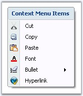
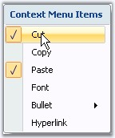
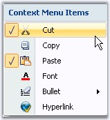

Shadow Settings
Shadow for the context menu drop down is controlled using the below property.
|
Property |
Description |
|
DropShadowEnabled |
Shows or hides three dimensional shadow for the context menu. |
|
[C#]
this.contextMenuStripEx1.DropShadowEnabled = true; |
|
[VB.NET]
Me.contextMenuStripEx1.DropShadowEnabled = True |
The below image displays a shadow for the context menu strip.

Figure 1428: DropShadowEnabled = "True"
Margin Settings
We can set margins for the context menu using the below properties.
|
Property |
Description |
|
ShowCheckMargin |
Shows or hides check margin on the left side of the context menu. |
|
ShowImageMargin |
Shows or hides the image margin on the left side of the context menu. |
|
ImageScaling |
Sets the size of images on items. |
|
[C#]
this.contextMenuStripEx1.ShowCheckMargin = true; this.contextMenuStripEx1.ShowImageMargin = true; |
|
[VB.NET]
Me.contextMenuStripEx1.ShowCheckMargin = True Me.contextMenuStripEx1.ShowImageMargin = True |

Figure 1429: ShowCheckMargin = "True"; ShowImageMargin = "False"

Figure 1430: ShowCheckMargin = "True"; ShowImageMargin = "True"
 Note: The check functionality can be enabled
using the Checked property and check state can be provided using CheckedState
property available for individual menu item, through Items Collection
Editor.
Note: The check functionality can be enabled
using the Checked property and check state can be provided using CheckedState
property available for individual menu item, through Items Collection
Editor.